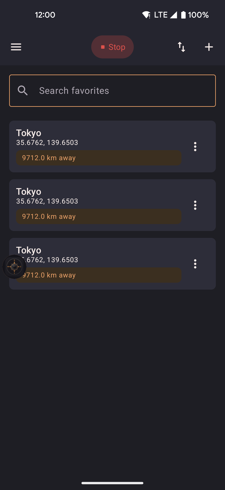
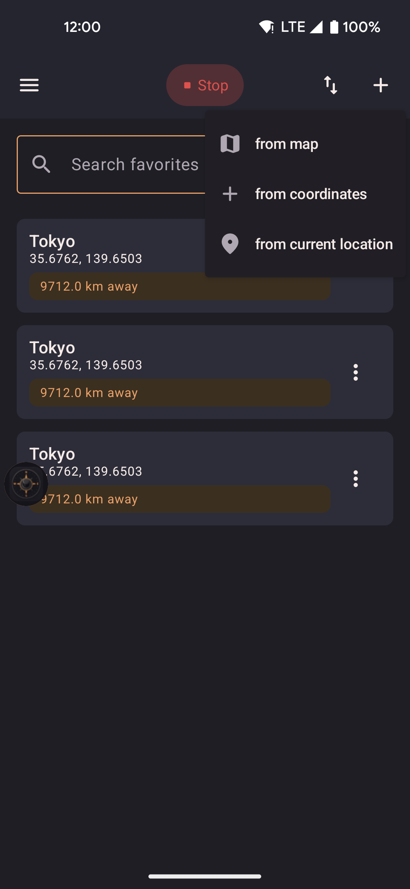
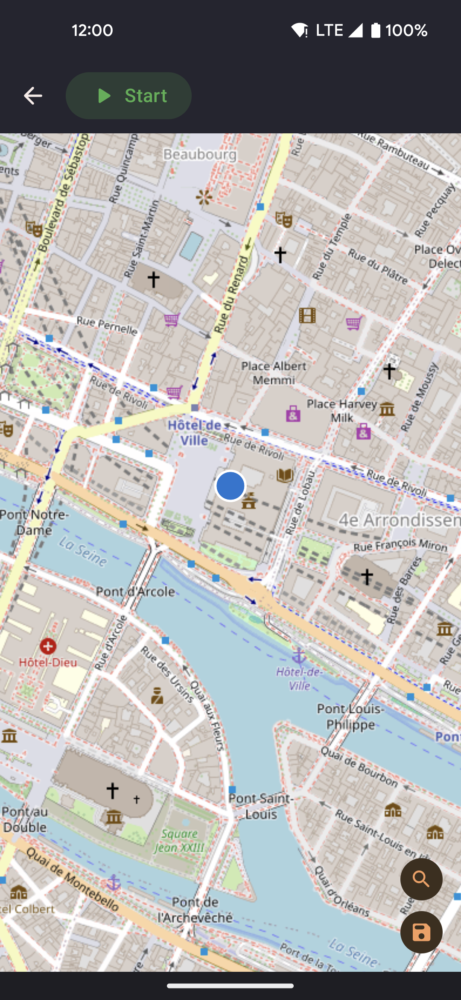

Favorites
Save named positions and jump to any of them instantly. Favorites appear in both the Favorites screen and in the map's favorites sheet for quick access without leaving the map.

- Tap a favorite to walk (straight line or via roads) or teleport to that location immediately.
- Long-press a favorite to rename or delete it.
- Add a favorite by entering coordinates directly or by picking a point on the map.
Search and categories
A search box at the top of the Favorites screen finds locations by name as you type. Locations that belong to a named area — such as the curated spots described below — are grouped together under that area's name, so it's easy to browse a large list. Locations without an area are shown on their own at the bottom.
How to add a favorite
Tap the plus button in the top-right corner of the Favorites screen to add a new location to your favorites.

- The floating action button (FAB) in the top-right corner opens the add menu.
- Choose "From coordinates" to enter a location manually, or "From map" to pick a point on the map.
Hot locations
Settings → Favorites → Show hot locations adds a curated list of popular spots around the world to your favorites — cities, parks, and landmarks that are commonly useful for location spoofing. The toggle is off by default.
- Disabling this option removes only the entries added by this feature. Your own favorites are never deleted.
- The setting persists across app restarts and is included in export/import.
- Each curated spot keeps its country as an area name once added, so it shows up grouped in the Favorites list.
Map picker
When adding a favorite "from map", a full-screen map opens. Tap to place a pin, or use the Nominatim search to find a location by name. Search queries are sent to the public Nominatim instance at nominatim.openstreetmap.org — only the text you type is transmitted, no GPS coordinates or identifiers.

- Search by place name to jump the map to a specific address or landmark.
- Tap the map to move the pin to any exact coordinate.
- Confirm to save with a name of your choice.